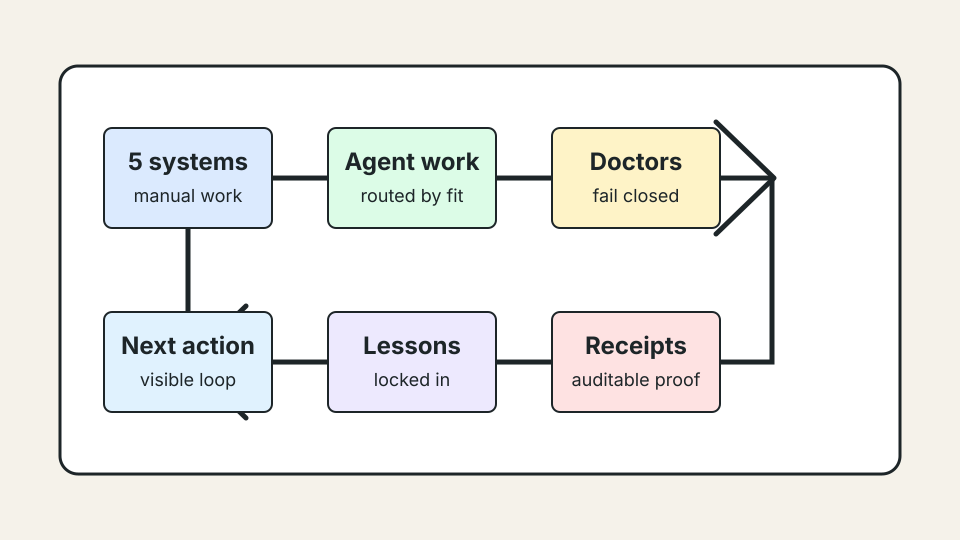

Start with the workflow.
The first move is to map what people already do, where systems disagree, and what a useful slice would change.
ZestStream uses Flywheel to make fast-moving agent systems safer to adopt, easier to inspect, and more useful across projects.
Public contact: joshua@zeststream.ai.
Why this is public
An SMB owner does not need to read every receipt to understand the standard. They need to see that the operator knows the workflow mess, respects the risk, and has a repeatable method for changing one route at a time.

Operator stance
The public site should make the owner feel that there is a real operator behind the work, without turning private customer outcomes into proof bait.
The first move is to map what people already do, where systems disagree, and what a useful slice would change.
Reusable lessons can move forward. Customer-specific details stay private unless explicitly consented and redacted.
If a support lane, install path, or public claim is not proven, it stays marked as blocked or pending.